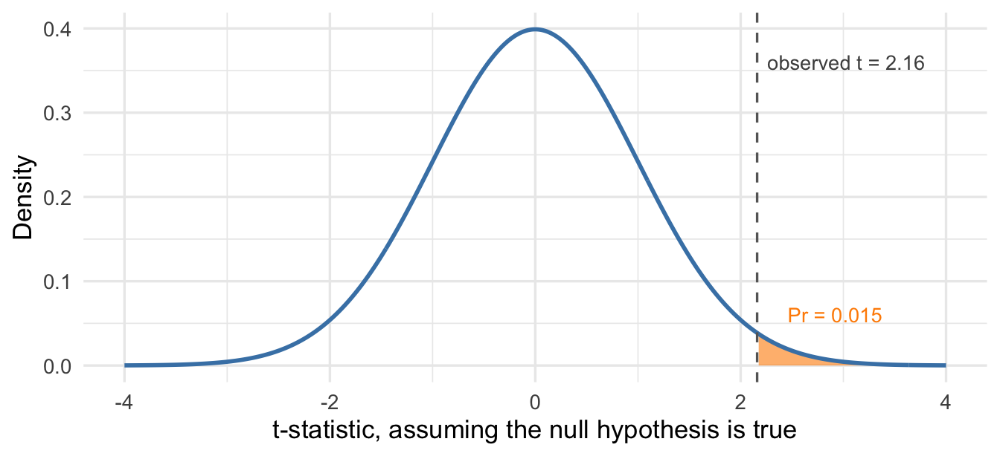

20 Case Study: Can Customers Taste the Difference?
The last chapter gave us an interval and a test for a population proportion. This case study applies both to a product-development question: can customers perceive the difference between two versions of a product? It also introduces a one-sided alternative hypothesis.
20.1 Mexican Coke and the triangle test
Coca-Cola made in Mexico is sweetened with cane sugar, while Coca-Cola Original in the United States uses high-fructose corn syrup. Mexican Coke has die-hard American fans who pay a markup for what they believe is a better product. Food and beverage producers face a version of this choice all the time. Can we switch to a different ingredient or process without changing the product in a way customers perceive?
A triangle test is a standard method for assessing whether people can discriminate between two products. Each panelist receives three blinded samples, two identical and one different, in a randomized order, and makes one independent response by identifying the odd one out. A panelist who perceives no difference still has to choose, and picks the odd sample with probability 1/3. The test measures discrimination, not which version a panelist prefers or what they would be willing to pay for it.
Suppose 42 panelists take a triangle test of the two Cokes, and that in reality nobody can tell them apart. We would expect 14 correct picks on average, one third of 42. Seeing 12 would not be surprising, and 16 could easily happen by chance. Seeing 27 would be much harder to attribute to guessing. In our invented panel, 21 of the 42 pick correctly. Is 21 more than guessing can explain?
Exercise 20.1: What does a triangle test measure?
Ninety panelists each take a triangle test comparing two products.
- If every panelist guesses, what is the probability of a correct pick, and how many correct picks would you expect?
- Suppose 36 panelists pick correctly. Does that show that 40% of customers can tell the products apart?
- Does it show that customers prefer the odd product?
Solution
- A guessing panelist picks the odd sample with probability 1/3, so we would expect \(90/3=30\) correct picks.
- No. The panel was right on \(36/90=40\%\) of picks, but that count includes lucky guesses: panelists who perceive no difference still pick correctly a third of the time. Here 36 is only 6 above the 30 correct picks expected from guessing; if everyone guessed, about 11% of 90-person panels would get 36 or more right. The panel does not show that anyone can tell the products apart.
- No. The test measures whether panelists can detect a difference, not which product they like.
20.2 What the panel says about \(p\)
We start with the interval. Let \(p\) be the probability that a randomly chosen customer picks correctly under these tasting conditions, and model the 42 independent responses as iid 0/1 draws. Correct picks can come from recognizing the difference or from guessing, and customers may vary in how reliably they recognize it. Here \(\hat p=21/42=0.5\), and the standard error of a sample proportion gives
\[ SE(\hat p)\approx\sqrt{\frac{0.5(0.5)}{42}}\approx0.077, \qquad 0.5\pm2(0.077)\approx[0.35,\ 0.65]. \]
The plausible values for \(p\) run from about 0.35 to 0.65, and pure guessing, \(p=1/3\), falls just below the lower endpoint. Performance could be only slightly above guessing, or customers could answer correctly nearly two thirds of the time.
Technical detail 20.1: A bound on the proportion of guessers
The proportion answering correctly can help us bound the proportion of customers who always guess in this tasting task. Let \(g\) be that population proportion, and suppose everyone else always recognizes the difference and answers correctly. The law of total probability gives the overall probability of a correct answer: multiply each group’s share by its probability of answering correctly, then add.
\[ p=\frac13g+1(1-g), \qquad\text{so}\qquad g=\frac32(1-p). \]
Substituting our estimate \(\hat p=0.5\) gives \(g=0.75\). Imagine 100 customers: 25 always answer correctly, while 75 guess and contribute another 25 correct answers on average. Together, they produce 50 correct answers.
Perfect performance among the non-guessers lets us explain the results with as few of them as possible. If they sometimes make mistakes, we would need more of them to explain the same overall accuracy. Thus, \(\frac32(1-p)\) is an upper bound on \(g\), and 75% is our estimate of that bound. Equivalently, we estimate a lower bound of 25% on the share with some ability to distinguish the products. These customers need not all distinguish them equally reliably.
Sampling uncertainty makes that conclusion much less precise. At the lower endpoint of our approximate 95% interval, \(p\approx0.346\), the upper bound on guessers is about 98%, leaving a lower bound of only about 2% with some ability to distinguish the products. The actual share of guessers could be smaller, because the other customers need not answer correctly every time. The interval supports some ability to distinguish the products, but leaves substantial uncertainty about how widespread that ability is.
The three steps of a hypothesis test measure the evidence against guessing directly.
20.3 Testing the guessing hypothesis
Step 1: Posit a null hypothesis and its alternative
The null hypothesis is that the two products are perceptibly identical, so that every panelist is guessing: \(H_0:p=1/3\). The alternative is \(H_A:p>1/3\). This is a one-sided alternative. In the SAP test a departure from the benchmark in either direction was of interest. Here the design of the experiment rules out one direction before we see any data. If some panelists can perceive the difference, \(p\) is larger than 1/3. The true probability could be below 1/3 only if something went badly wrong in running the panel.
Step 2: Collect and evaluate evidence
The raw discrepancy \(\hat p-1/3\) ignores the size of the panel. If 2 of 4 panelists picked correctly we would also have \(\hat p=0.5\) and a discrepancy of \(1/6\), with much weaker evidence against guessing. The \(t\)-statistic accounts for the panel’s size through the standard error:
\[ T=\frac{\hat p-p_0}{SE(\hat p)}, \qquad t=\frac{0.5-1/3}{0.077}\approx2.16. \]
The sample proportion is about 2.2 standard errors above the value expected under guessing. For the four-person panel the standard error is \(\sqrt{0.5(0.5)/4}=0.25\), and the same sample proportion gives \(t=0.67\). This comparison illustrates why the standard error depends on panel size; four responses are too few for a trustworthy normal p-value.
If the null hypothesis is true, \(T\) is approximately standard normal. With a one-sided alternative, “at least as extreme” means at least as far above zero, because only large positive values of \(t\) count as evidence for \(p>1/3\). The p-value is the upper-tail area shaded in Figure 20.1.
If everyone were guessing, only about 1.5% of 42-person panels would produce a \(t\)-statistic of 2.16 or more.
Step 3: Reach a verdict
The p-value of 0.015 is below \(\alpha=0.05\), so we reject the null hypothesis: the panel gives evidence that at least some people can tell the two products apart. The test says little about how detectable the difference is. The interval allows a probability of a correct pick barely above 1/3, and it allows one as high as 0.65.
Technical detail 20.2: An exact p-value from the binomial distribution
If every panelist guesses independently, the number of correct picks has a binomial distribution with 42 trials and success probability 1/3. The exact probability of 21 or more correct picks is 0.019, close to the normal approximation’s 0.015.
20.4 One-sided and two-sided p-values
Using the normal approximation, a two-sided test of the same null hypothesis would count both tails, doubling the p-value to about 0.031. The connection between intervals and tests is a statement about two-sided tests under the same two-SE rule, and it holds here: guessing falls outside the two-SE interval, and the two-sided test rejects it at about the 5% level. The displayed two-sided interval does not invert the one-sided 5% test.
Ruling out \(p<1/3\) in advance is what lets the same \(t\)-statistic count as stronger evidence. In the triangle test we can defend that: nothing about the products would make panelists systematically worse than guessing. Compare the bootcamp comparison, where we would be hard pressed to argue that the intensive program could not possibly be worse than the standard one. There the two-sided test is the right one, however confident the program’s designers are.
WarningCommon mistake: Choosing the tail after seeing the data
If the analyst could pick a one- or two-sided test after seeing the data, they might be tempted to make the choice more in line with their expected or preferred findings. For example, since a one-sided test produces smaller p-values, an analyst might be tempted to adopt it when they hoped or expected to produce strong evidence against the null. In general, one-sided alternatives should be used only when defensible from context — like in a triangle test, where a two-sided alternative would imply that somehow tasters do worse than random guessing — and we can always identify these before seeing any data.
Exercise 20.2: Interpret one-sided evidence
In an invented triangle test, 27 of 60 independent panelists pick the odd sample. Before testing, the analyst chose \(H_0:p=1/3\) against \(H_A:p>1/3\), where \(p\) is the probability of a correct pick under these tasting conditions. If every panelist guessed, the exact binomial probability of 27 or more correct picks would be about 0.040.
- What is the p-value, and what is the decision at \(\alpha=0.05\)?
- Why doesn’t the p-value include the probability of unusually low counts?
- State a conclusion in context. What does the result leave unanswered about preference, and about whether a recipe change is acceptable?
- The panel consisted of classmates. What further limitation applies?
Solution
- The one-sided p-value is about 0.040, below 0.05, so we reject the guessing hypothesis.
- The alternative, chosen before testing, is \(p>1/3\), and only high counts are evidence for it. Nothing about the products would make panelists systematically worse than guessing.
- The panel gives evidence that at least some people can distinguish the products under these tasting conditions. It says nothing about which product people prefer. Whether a recipe change is acceptable is a separate question about how detectable the difference is, which a rejection of guessing does not settle.
- Classmates are a convenience sample. A claim about all customers would need a sampling design that supports it.
20.5 Showing that a change is acceptable
The Coke panel asked whether a difference is detectable. A producer switching to a cheaper input needs to decide whether any difference is small enough to accept. Failing to reject the guessing hypothesis does not establish that customers cannot perceive the change, for the same reason that failing to reject never establishes a null hypothesis. For a decision based on the triangle test, the producer can set a largest acceptable probability of a correct pick before running the panel, then assess whether the interval lies entirely below that threshold. This criterion concerns performance on the tasting task; it does not measure whether customers prefer the new recipe or would continue buying it.
In the exercise below, we use the upper endpoint of our usual two-SE interval to assess acceptability.
Exercise 20.3: Can customers detect the cheaper recipe?
A snack maker wants to replace an ingredient with a cheaper substitute and hopes customers cannot perceive the change. Its brand team will accept the new recipe only if the probability of a correct pick on this tasting task is below 0.45. In an invented triangle test, 24 of 60 panelists identify the odd sample.
- Test whether the result provides evidence beyond guessing: state \(H_0:p=1/3\) and \(H_A:p>1/3\).
- Compute the approximate 95% confidence interval for \(p\), the \(t\)-statistic, and the one-sided p-value. The area above \(1.05\) under the standard normal curve is about 0.15.
- State the verdict for the guessing test at \(\alpha=0.05\). Then assess the separate acceptance question: is the upper endpoint of the two-SE interval below 0.45? The product manager summarizes the result as “the test shows customers can’t tell the difference.” Is that what the test shows?
Solution
- For the guessing test, the null is \(H_0:p=1/3\), every panelist guessing, and the alternative is \(H_A:p>1/3\).
- The sample proportion is \(\hat p=24/60=0.40\), with estimated standard error \(\sqrt{0.4(0.6)/60}\approx0.0632\). The interval is \(0.40\pm2(0.0632)\approx[0.27,\ 0.53]\). The two-SE formula does not impose the model restriction \(p\geq1/3\), so the interval extends below 1/3. Only the part at or above 1/3 contains possible population values under the triangle-test model. This restriction applies to \(p\), not to the observed \(\hat p\), which can fall below 1/3 by sampling variation. The \(t\)-statistic is \((0.40-0.3333)/0.0632\approx1.05\), and the one-sided p-value is about 0.15.
- We fail to reject the guessing null, since \(0.15>0.05\). That result does not establish that customers cannot tell the difference. The interval allows a probability of a correct pick as high as 0.53, above the brand team’s threshold of 0.45, so the panel does not show that the new recipe meets the brand team’s criterion. Using the two-SE interval, a 60-person panel can support acceptance with a sufficiently low result: 19 correct responses has an upper endpoint of 0.437, below 0.45. But even 20 correct responses, exactly the guessing rate, would have an interval reaching 0.455. The margin of error, about 13 percentage points, is too large relative to the gap between 1/3 and 0.45.